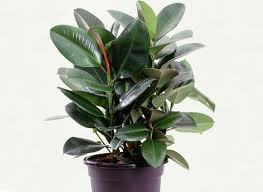

Caoutchouc et ficus

Caoutchouc et ficus (Ficus spp (elastica, lyrata, benjamina, diversicola, pumila, barbata) de la famille des Ficacées)
Attention : pour le Korat hautement toxité par ingestion plus toxicité de contact (photosensibilisante)
Partie toxique pour les chats en général et le Korat en particulier :
Toute la plante dont le latex substances vésicantes voisines de celles des euphorbiacées.
Symptômes du processus pathologique :
Lors d'ingestion, vomissements, diarrhée, ptyalisme et lésions buccales, météorisme, prostration, mydriase, œdème de la face, atteinte rénale. Régression en quelques jours mais parfois mortel chez le chat.
Origine de la toxicité (principe actif) :
Furocoumarines photosensibilisantes.